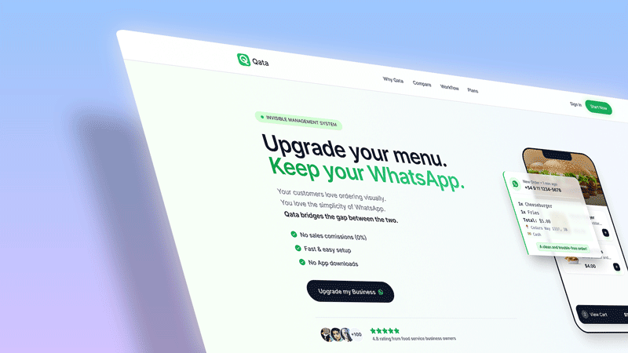
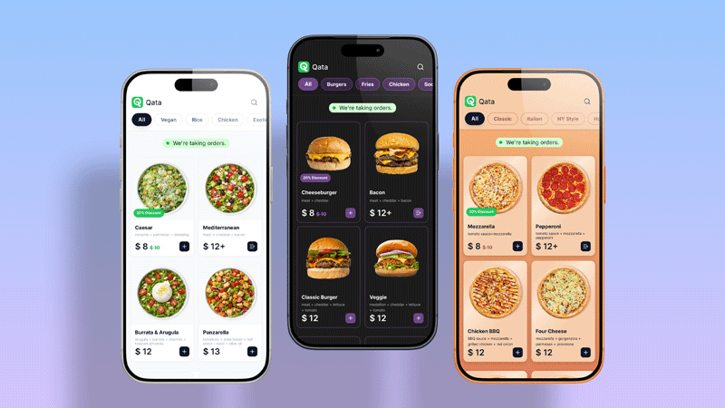
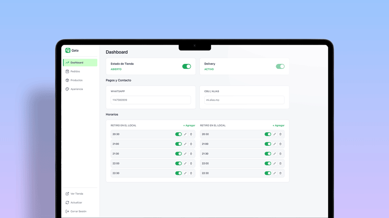
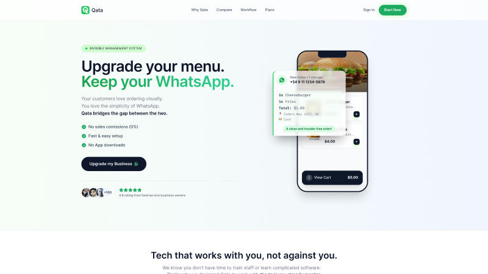

Beyond “Are You Open?”: Designing Qata to Automate WhatsApp Sales

The Challenge: The Peak-Hour Chaos
Whether it’s the Friday night dinner rush for a local restaurant or the early-morning bulk order surge for a wholesaler, the chaos feels exactly the same. The kitchen or warehouse is at full capacity, orders are piling up, and the phone won’t stop vibrating.
The worst part? They aren’t closed sales. They’re dozens of repetitive WhatsApp messages asking the exact same questions:
• 'Are you open?'
• 'Are you taking orders right now?'
• 'Can you send me the updated menu?'
• 'Are you doing delivery today?'
The time the entrepreneur should be spending running their business is wasted acting like a human chatbot.
The design challenge for Qata was clear: we needed to build a multi-tenant SaaS that eliminated this friction at its root. The goal was to give end customers—from late-night diners to B2B wholesale buyers—a 100% visual, self-serve purchasing experience, while delivering the business owner a clean, formatted order straight to their WhatsApp. All of this had to be designed for users with zero technical background.
The Solution: A Visual Bridge Between the Buyer and the Business
To tackle this, we divided the product into three fundamental pillars, each with specific UX and Conversion Rate Optimization (CRO) goals.
1. The Customer Frontend: Zero Friction, 100% Conversion
People buy with their eyes, whether they are ordering a single burger or a bulk supply of ingredients. We knew customers didn’t want to download heavy native apps or pinch-to-zoom on outdated PDF files. We designed a digital storefront focused heavily on visual clarity and immediacy.

Key Design Decisions
• White-Label Customization: Qata is designed to operate invisibly in the background. We built a true white-label architecture that allows business owners to easily inject their own brand identity by uploading their logos and setting custom color palettes. To the end customer, it doesn’t feel like a generic third-party SaaS; it feels like a bespoke, native app built specifically by their trusted supplier or favorite restaurant.
• The Status Badge: At the very top of the screen, a prominent green indicator clearly states, “We’re taking orders!” This instantly eliminates the most common, time-wasting question businesses receive.
• Frictionless Navigation: Quick, pill-style category filters (e.g., All, Burgers, Bulk Supplies, Beverages) allow users to find exactly what they’re looking for in under three clicks.
• Photography as the Hero: Large product cards paired with high-contrast, "fat-finger" friendly buttons ensure usability across all mobile devices.
The Admin Dashboard: Designed for the Non-Techie
This is where we faced our biggest UX hurdle. The ideal Qata user is an excellent cook, a busy distributor, or a hustling entrepreneur—not an IT manager.
The control panel needed the lowest possible cognitive load. The abstract thinking usually required to create categories, upload products, manage variables, and configure schedule logic is often overwhelming on other platforms.

Key Design Decisions:
• The “Switch” Rule: Instead of burying store status in complex dropdown menus, we used large, friendly toggles. Turning off "Store Status" or "Delivery" is literally as easy as flipping a light switch.
• Visual Schedule Management: Takeout and Delivery hours are displayed visually and side-by-side. This allows the owner to set up their weekly logistics once and completely forget about it.
• Easy Product Organization: To solve the abstraction of cataloging, we built an interface that mirrors the final customer-facing result. Owners can organize their offerings intuitively, without ever seeing technical terminology.
The Landing Page: Selling Empowerment
Marketing Qata couldn’t just be about selling an app; we had to sell the recovery of control. The landing page was built entirely around the core concept of a “zero learning curve.”

The value proposition is immediate: Your storefront. Your rules. Zero commissions.
Key Design Decisions:
• Direct Copywriting: “Your digital store. Your rules. Your WhatsApp.” Three punchy sentences that immediately summarize the platform's core benefit.
• Objection Handling: The hero section features three simple bullet points designed to neutralize the biggest user anxieties right away: 0% commissions, instant payments, and no app downloads.
• Visual Social Proof: A floating “New Order” widget hovering over a phone mockup shows exactly how the owner receives the information—clean, structured, and priced—contrasting sharply with the chaotic, unorganized messages they are used to fielding.
The Result: From Customer Support Back to Core Business
While Qata is currently in its early stages, our design validation proves it solves the core pain point of our user persona. By delegating operational and repetitive questions to a smart, highly visual interface, food business owners and wholesalers regain what they value most: their time.
Qata is more than just a digital menu or catalog; it’s a filter that transforms repetitive questions into ready-to-charge sales tickets.